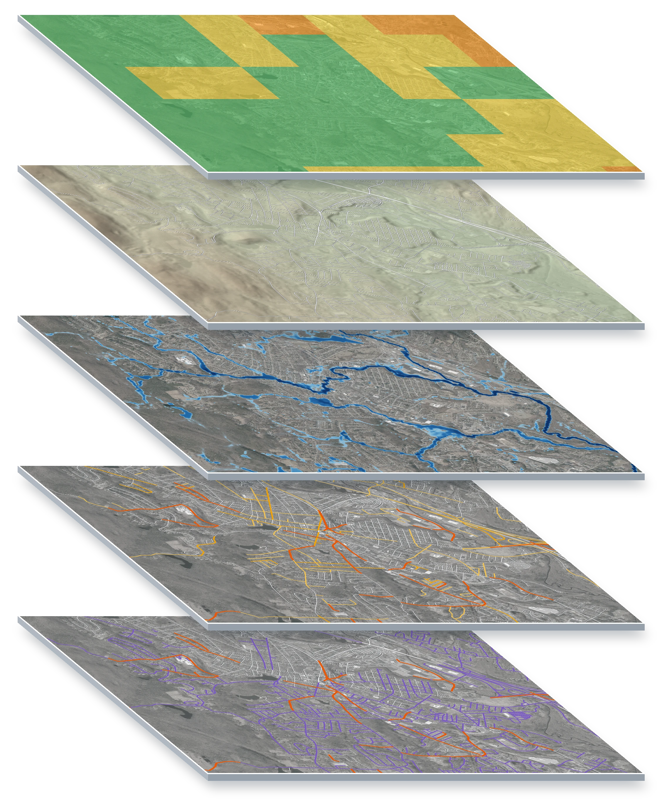

How it works
From rain to a closed road
One real storm, one moment: Leominster, Monday 11 September 2023, 6:50 PM, the worst hour of the flash flood. Every picture on this page is drawn from the model's own output for that moment.
The model in five layers
The same 6 × 5.4 km of central Leominster, five times. Each layer is what one step of the model produces, from the rain at the top to the people who lose quick access to help at the bottom.

Step 1
Rain
Weather radar measures how hard it is raining on every square kilometre, every few minutes. The model spreads that rain evenly over the small 20 m squares it works with.
Data: NOAA Multi-Radar Multi-Sensor (MRMS) radar rain, about 1 km squares, every 2 minutes. Before a storm, the national HRRR forecast takes its place.
Step 2
Ground
Lasers flown from planes measure the height of the ground. Water always runs downhill, so this map decides where every drop goes. Here, the hills to the west drain into the brooks that run through downtown.
The model also knows what covers the ground (roofs and pavement send rain straight off, grass and woods soak some up), the soils, and every culvert where a stream passes under a road.
Data: USGS 3DEP lidar, averaged to 20 m squares; land cover from NLCD 2021; soils from SSURGO; roads from MassDOT.
Step 3
Flood engine
A free, open-source flood model from the University of Bristol (LISFLOOD-FP) moves the rain over the ground, second by second, from each 20 m square to its lower neighbours. It saves the water depth on every square every 5 minutes.
Engine: LISFLOOD-FP 8.2, two-dimensional shallow-water equations, time step of 1 second or less, run on free GitHub computers and WPI's Turing cluster.
Step 4
Water on each road
The model puts a dot every 10 m along every street and reads the water depth under each dot. For each piece of road it takes the second-deepest dot, so one odd dot cannot close a road on its own. Water that was already there before the rain (a stream in a culvert) does not count.
Most of the street is dry (white dots). It closes because of the low stretch where the water from the brook crosses it.
Each square is 20 m, the model's grid. Darker blue is deeper water.
Step 5
Road closes?
At about 30 cm, water reaches the door sill of a car and small cars can float. The model marks a road closed from 30 cm, at risk from 15 cm, and slower from 5 cm.
Closure depth from vehicle-stability research (Kramer et al. 2016; Martínez-Gomariz et al. 2018) and the depth–speed curve of Pregnolato et al. (2017).
Step 6
Who loses access
All streets are joined into one network, like a navigation app. With the closed roads removed, the model finds the quickest route from every fire station, hospital and police station. Purple streets could be reached in time before the storm, but not at 6:50 PM.
Response standards: fire 8 minutes (NFPA 1710), hospital 30 minutes, police 10 minutes. Stations from public facility lists; travel times by road class.
Checked against reality
What people reported
Flood reports from that evening are never given to the model. They are only used afterwards, to check whether the roads it closed are the roads people saw flooded.
Reports: NWS local storm reports and the NOAA Storm Events database. Tap a dot to read the report.
The whole model, part by part
Every part of the model, in the order the water meets it. Press Next to walk through it one step at a time, or select any part to read what it does in plain words.